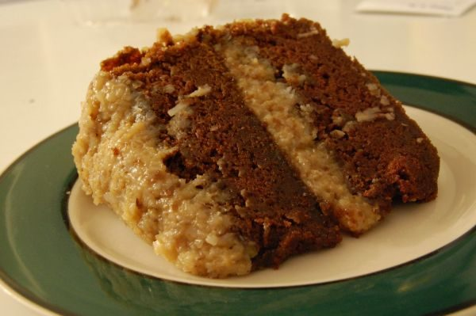

Sweet Chocolate Pie

Photo: stu_spivack (CC BY-SA 2.0)
A frozen chocolate pie of melted sweet baking chocolate blended with cream cheese and whipped topping in a graham cracker crust.
Directions
- Melt chocolate and 2 tablespoons of the milk in pan until melted.
- Beat in cream cheese, sugar and remaining milk with wire whisk until blended. Refrigerate about 10 minutes to cool. Gently stir in 3 1/2 cups of the whipped topping until smooth. Spoon into crust. Freeze 4 hours. Let stand at room temperature 15 minutes before cutting pie. Serve with remaining whipped topping. Store leftovers in freezer.
- Melt the sweet baking chocolate with 2 tablespoons of the milk in a pan until melted.
- Beat in the cream cheese, sugar, and remaining milk with a wire whisk until blended.
- Refrigerate about 10 minutes to cool.
- Gently stir in 3 1/2 cups of the whipped topping until smooth.
- Spoon into the graham cracker crust.
- Freeze 4 hours.
- Let stand at room temperature 15 minutes before cutting the pie.
- Serve with the remaining whipped topping. Store leftovers in the freezer.
Goes well with
https://baron-3dl.github.io/normans-kitchen/recipe/sweet-chocolate-pie.html